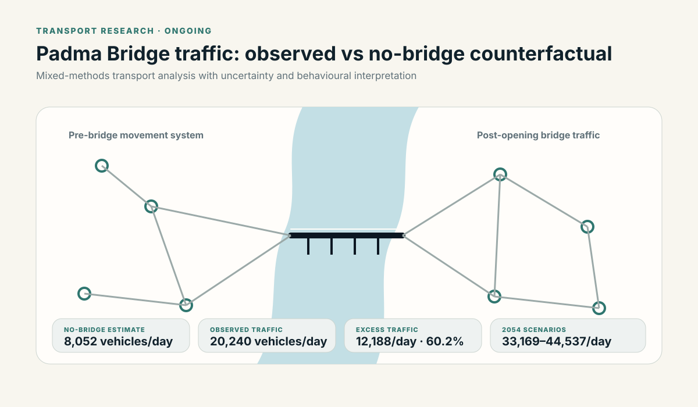
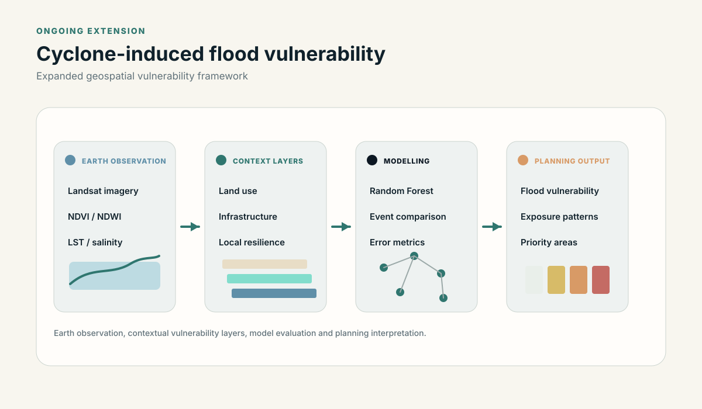
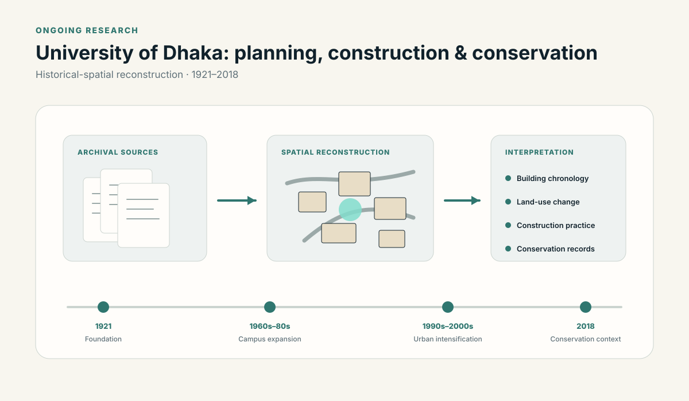
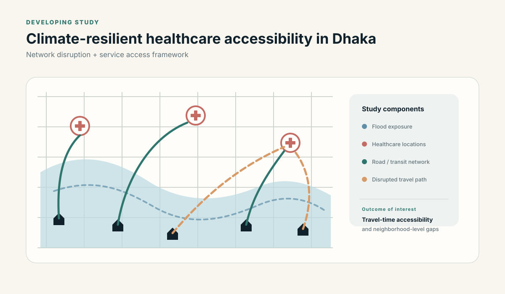
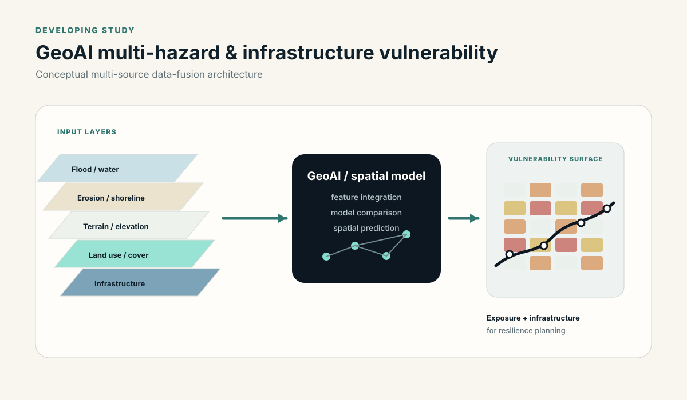
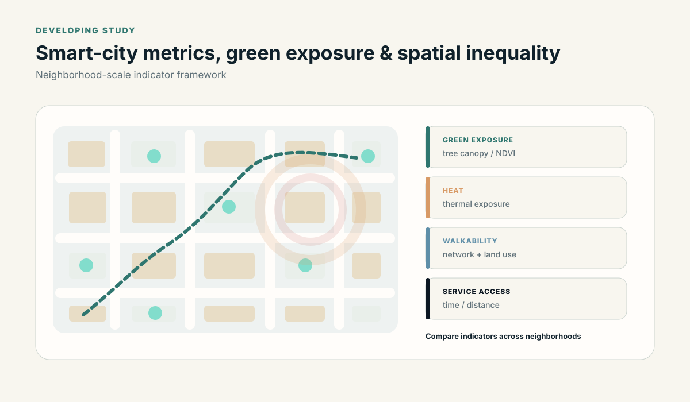

01
Transport, mobility & infrastructure
Induced travel, route choice, accessibility, infrastructure-led urban growth and spatial inequality.
My research focuses on transportation planning, infrastructure-led change, climate risk and geospatial analysis. Below, I separate completed work from research I am extending and ideas that are still at concept stage.
Induced travel, route choice, accessibility, infrastructure-led urban growth and spatial inequality.
Cyclone and flood exposure, coastal vulnerability, critical infrastructure and climate-resilient access to essential services.
Earth observation, GIS, spatial modelling, machine learning, network analysis and uncertainty-aware workflows.
My portfolio includes completed, published and ongoing work. I separate finished studies from projects that are still being developed.

Applied Earth observation and Random Forest regression to historical cyclone scenarios in Khulna, Satkhira and Bagerhat, with reported model evaluation and spatial vulnerability outputs.
Completed UNDP study and reported results →
Co-authored a GIS-based regional vulnerability assessment combining physical and socioeconomic indicators for resilience-oriented planning.
Published study summary →
Mixed-methods transport research estimating a no-bridge traffic condition, bridge-attributable excess traffic and long-term traffic scenarios while explicitly separating induced travel from route diversion and mode transfer.
Methods, results and limitations →
Revisiting temporal validation, updating geospatial inputs and testing a broader vulnerability framework that can incorporate land use, infrastructure and localized resilience factors.
Original completed study →
Examining long-term campus development through archival maps, planning documents, building histories and spatial reconstruction, with attention to urban morphology and conservation.

Proposed network-based GIS research on how flooding and travel-time disruption may affect access to healthcare and essential services across Dhaka.

Proposed multi-source geospatial research combining satellite observations, terrain, land use, climate and infrastructure information to examine exposure to flooding, erosion and environmental change.

Proposed neighborhood-scale analysis of walkability, green exposure, heat and service accessibility as measurable dimensions of urban inequality.
Across these projects I use spatial analysis, Earth observation, machine learning, network analysis, transportation modelling and mixed research methods.